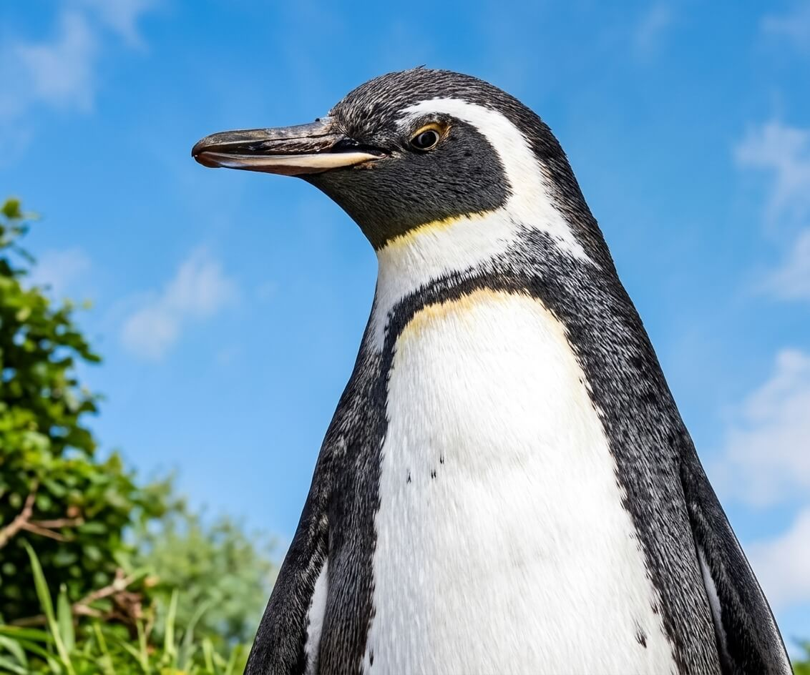
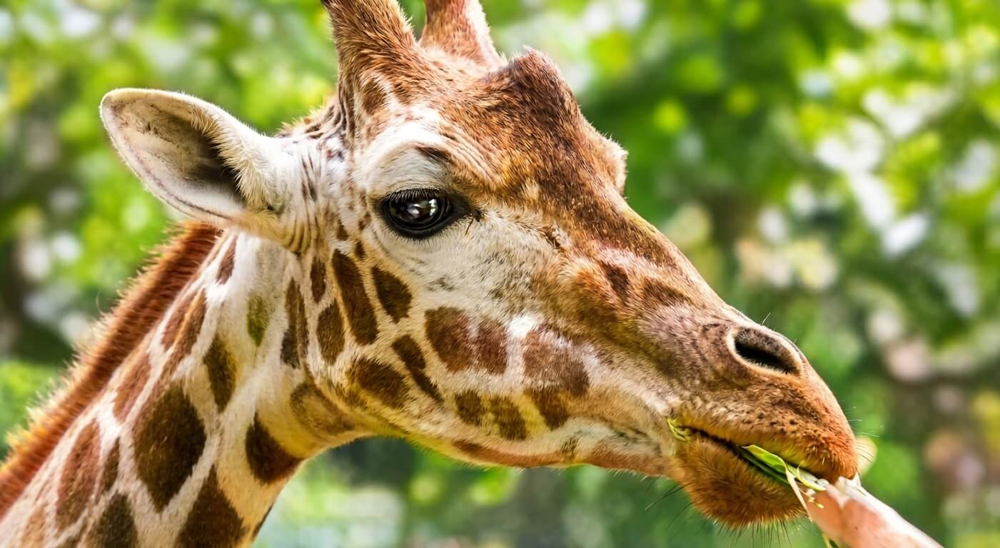

10:30〜

レッサーパンダのもぐもぐタイム
器用な前足で竹の葉や大好きなリンゴをつかんで食べる姿を至近距離で観察！しっぽの役割や体のひみつを飼育員が楽しく解説します。
参加費：無料（予約不要）
お食事タイムは毎日開催！動物の体調や天候により時間が前後する場合があります。
FEEDING TIME
かじる音、長い舌の動き、豪快な水しぶき——。
飼育員のライブ解説とともに、動物たちの生き生きとした「食べる姿」を目の前で観察しよう！
器用な前足で竹の葉や大好きなリンゴをつかんで食べる姿を至近距離で観察！しっぽの役割や体のひみつを飼育員が楽しく解説します。

よちよち歩いて登場したあと、アジやイワシを丸呑みするダイナミックな食事シーンを披露！1羽ずつの性格の違いにも注目です。

専用デッキから目線の高さでキリンとご対面！約40cmもある紫色の長い舌を器用に使って木の葉やニンジンを受け取る瞬間は迫力満点です。
1日に約100kgもの草や果物を食べるゾウたちの夕食タイム。長い鼻を器用に使って小さなエサまで拾い上げるスゴ技が見られます。
高い位置にエサを吊るしたり丸太の中に隠したり、動物が頭と体を使って食べる「環境エンリッチメント」の工夫が見られます。
その日の体調や好き嫌い、個体ごとの性格など、毎日お世話をしている飼育員だからこそ知っているエピソードをお話しします。
ガラス面や専用デッキの最前列で見たい方は、開始の10分前を目安に展示場前へお集まりいただくのがおすすめです。

10:30〜 小獣の森エリアにて開催。飼育員の解説つきで、リンゴや竹の葉を食べる姿を間近で観察できます。
11:30〜 ペンギンビーチにて開催。よちよち歩く行列のあと、豪快なエサやりタイムが始まります。
14:30〜 サバンナテラスにて開催。長い舌でエサを受け取るキリンを間近で。1回300円、整理券制（開園時より案内所にて配布）です。
15:30〜 ゾウの広場にて開催。お母さんゾウと赤ちゃんゾウが仲良くエサを食べる様子をご覧いただけます。